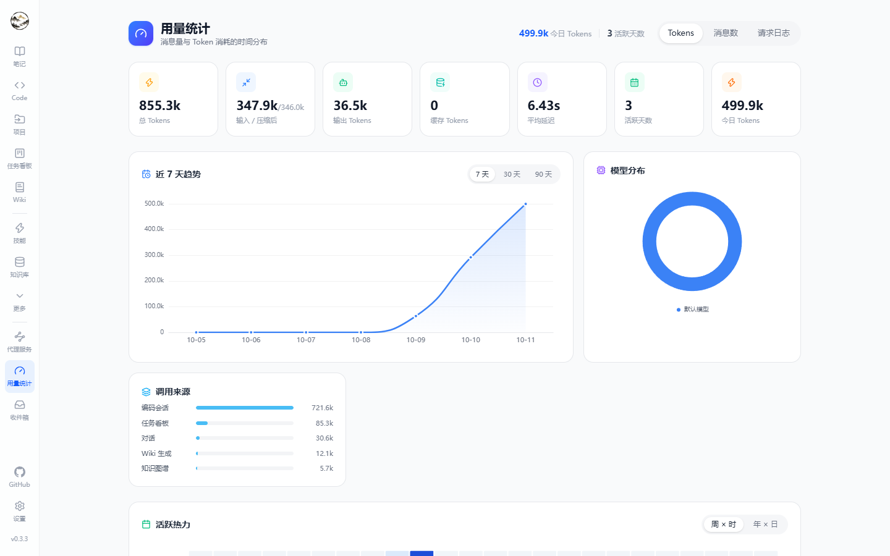

Hetu ships no models of its own: it adapts protocols and assigns capability to scenarios, then records what every call cost.
Providers and models
Item
Details
Protocols
OpenAI-compatible (including Ollama / LM Studio / vLLM) and Anthropic
Connection
Base URL plus API key; keys are encrypted with DataProtection
Purposes
chat (conversation and agent loop) / embedding (indexing and retrieval) / completion (light rewrites)
Model ID
Sent as-is in requests; must match what the provider expects
Per-scenario default models
Scenario
Typical choice
Chat / code sessions
Your strongest reasoning model
Wiki generation / graph extraction
A mid-tier model with good long-context behaviour
Topic organizing / compression summaries
A cheap, fast model
Note AI / query rewriting
Low-latency small model
Embedding
A vector model whose dimensions match Embedding:Dimensions
Proxy service
Entry: /proxy. Exposes your configured models through local compatible endpoints so editors, CLIs and scripts reuse the same keys and the same usage accounting.
# OpenAI-compatible endpoint
Base URL: http://localhost:5000/api/proxy/openai/v1
API key : generated on the Proxy page
# Anthropic-compatible endpoint
Base URL: http://localhost:5000/api/proxy/anthropic
Feature
Details
Routing
Controls which models are visible through the proxy
Shadow model
Sends the same request to a second model for output comparison
Usage attribution
Proxied calls are counted too, tagged with the proxy source
Calling the proxy
# list the models exposed by the proxy
curl http://localhost:5000/api/proxy/openai/v1/models \
-H "Authorization: Bearer <local proxy key>"
# run a completion through it
curl http://localhost:5000/api/proxy/openai/v1/chat/completions \
-H "Authorization: Bearer <local proxy key>" \
-H "Content-Type: application/json" \
-d '{"model":"gpt-4o-mini","messages":[{"role":"user","content":"hi"}]}'
Proxied calls are recorded in usage with the proxy source; model visibility and the shadow model are configured on the Proxy page.
Provider and model fields
Level
Fields
Provider
Name, protocol (OpenAI-compatible / Anthropic), Base URL, API key (encrypted), enabled flag
Model
ModelId (sent verbatim), display name, purpose (chat / embedding / completion), default flag per purpose, context metadata
Compression
Trigger threshold, target size, summary model; both pre- and post-compression tokens land in usage
Usage and cost
Metric
Details
Overview
Total messages, input / compressed / output / cached tokens, average latency, active days, today's usage
Trends
7 / 30 / 90 day curves, plus week×hour and year×day heatmaps
Distribution
By model and by source (chat / code / kanban / Wiki / graph / scheduled / proxy …)
Detail log
Paged entries with time, model, token segments, latency, source and content preview; filterable by source and business reference

Click for full size
Compression pipeline
Entry: Settings → Cost control. Long conversations cannot grow forever, so the pipeline summarizes at a threshold.
Parameter
Details
Trigger threshold
Context usage ratio at which compression starts
Target size
How much content to keep afterwards
Summary model
Which model writes the summary (falls back to the default chat model)
Accounting
Both pre- and post-compression tokens are recorded so savings are measurable
Keeping cost down
Practice
Why
Use cheap models for indexing, organizing and tagging
High volume, low reasoning demand
Only enable knowledge base / memory toggles when needed
Avoids injecting retrieval results into every request
Use isolated worktrees and define task boundaries in code sessions
Fewer trial-and-error turns
Autopilot for long tasks, interactive for quick questions
The former saves confirmation rounds, the latter avoids pointless tool calls